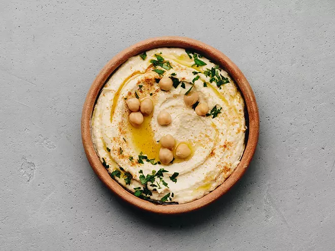
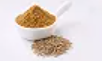
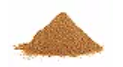
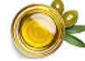
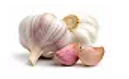
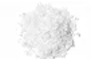
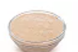
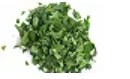

Houmous Libanais

Ce houmous libanais sera parfait tout au long de l'année pour vos apéros, en dip, pour accompagner des crudités ou en mezzé avec un taboulé, des falafels... En plus d'être polyvalent, il se prépare en 10 minutes montre en main. L'essayer, c'est l'adopter ! Les pois chiches, le citron, le cumin, la coriandre et le persil plat vous embarquent pour un aller simple en Orient... À vos blenders !
Preparation time
- Prepatation 10 mins
- Total 10 mins
Ingrediants
-
Pois chiche 300g

- Jus de citron 0.5
- Cumin en poudre 1 c a cafe 
- Coriandre en poudre 1 c a cafe 
- Huile dolive3 c a cafe 
- Ail 1 gousse 
- Piment doux 0.5 c a soupe
- Sel 0.5 c a soupe 
- Tahin 2 c a soupe 
- Persil Plat cisele feuilles 
Instructions
- Égouttez vos pois chiches dans une passoire et rincez-les sous l'eau froide.
- Versez-les dans le bol de votre mixeur.
- Mixez-en plusieurs fois en rajoutant progressivement un peu d'eau pour obtenir une crème assez dense.
- Ajoutez le tahin, le jus de citron, les épices, l'ail haché et mixez à nouveau pour obtenir une texture homogène. Salez selon votre goût.
- Dressez dans un bol avec un filet d'huile d'olive, un peu de piment ou de paprika et parsemez de persil.
Nutrition
Protéines 6,8 gGlucides 9,3 g
Lipides 23,4 g
Eau 53 g
Top